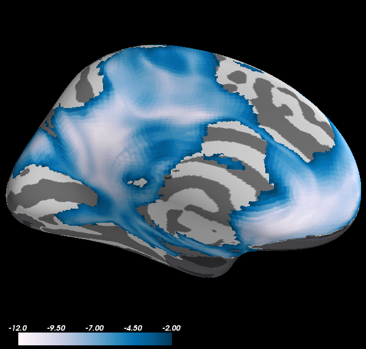

To plot data on the surface that is stored as a volume image, it is only slightly more complicated. You’ll have to use the function surfer.project_volume_data, which makes an external call to the Freesurfer program mri_vol2surf.
Note: In PySurfer versions 0.4 and lower, the project_volume_data function must be imported from surfer.io.
Python source code: plot_fmri_activation_volume.py
print __doc__
import os
from surfer import Brain, project_volume_data
"""
Bring up the visualization window.
"""
brain = Brain("fsaverage", "lh", "inflated")
"""
Get a path to the volume file.
"""
volume_file = "example_data/zstat.nii.gz"
"""
There are two options for specifying the registration between the volume and
the surface you want to plot on. The first is to give a path to a
Freesurfer-style linear transformation matrix that will align the statistical
volume with the Freesurfer anatomy.
Most of the time you will be plotting data that are in MNI152 space on the
fsaverage brain. For this case, Freesurfer actually ships a registration matrix
file to align your data with the surface.
"""
reg_file = os.path.join(os.environ["FREESURFER_HOME"],
"average/mni152.register.dat")
zstat = project_volume_data(volume_file, "lh", reg_file)
"""
Note that the contours of the fsaverage surface don't perfectly match the
MNI brain, so this will only approximate the location of your activation
(although it generally does a pretty good job). A more accurate way to
visualize data would be to run the MNI152 brain through the recon-all pipeline.
Alternatively, if your data are already in register with the Freesurfer
anatomy, you can provide project_volume_data with the subject ID, avoiding the
need to specify a registration file.
By default, 3mm of smoothing is applied on the surface to clean up the overlay a
bit, although the extent of smoothing can be controlled.
"""
zstat = project_volume_data(volume_file, "lh",
subject_id="fsaverage", smooth_fwhm=0.5)
"""
Once you have the statistical data loaded into Python, you can simply pass it
to the `add_overlay` method of the Brain object.
"""
brain.add_overlay(zstat, min=2, max=12)
"""
It can also be a good idea to plot the inverse of the mask that was used in the
analysis, so you can be clear about areas that were not included.
It's good to change some parameters of the sampling to account for the fact that
you are projecting binary (0, 1) data.
"""
mask_file = "example_data/mask.nii.gz"
mask = project_volume_data(mask_file, "lh", subject_id="fsaverage",
smooth_fwhm=0, projsum="max").astype(bool)
mask = ~mask
brain.add_data(mask, min=0, max=10, thresh=.5,
colormap="bone", alpha=.6, colorbar=False)
brain.show_view("medial")